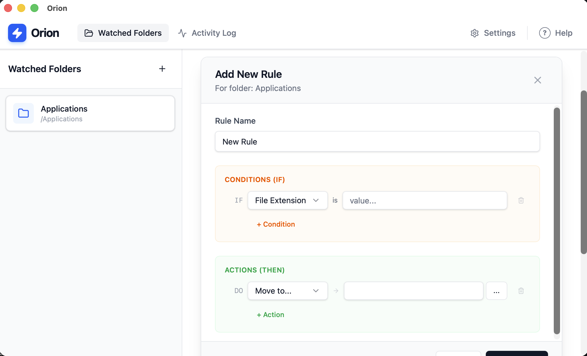

See It In Action
A clean, intuitive interface that gets out of your way.

Intuitive Rule Builder

Activity Log with Undo

Easy Configuration
Orion intelligently organizes your files based on rules you define. Private, offline, and blazingly fast.
Designed for power users and minimalists alike.
Orion runs entirely on your local machine. No data is ever sent to the cloud. Your files are your business.
Built with Rust and Tauri, Orion uses minimal resources while processing thousands of files in seconds.
Filter by name, extension, date, and more. Chain conditions to create complex workflows effortlessly.
A clean, intuitive interface that gets out of your way.
Intuitive Rule Builder
Activity Log with Undo
Easy Configuration
Simple setup, powerful results.
Choose any directory on your computer that you want Orion to watch (e.g., Downloads, Desktop).
Tell Orion what to do. Example: "If file is a PDF, move it to the Documents folder."
Orion runs in the background. Or, trigger it manually. Undo any action with a single click if needed.
Available for macOS, Windows, and Linux.